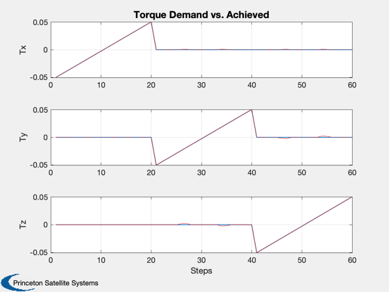
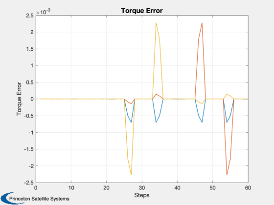
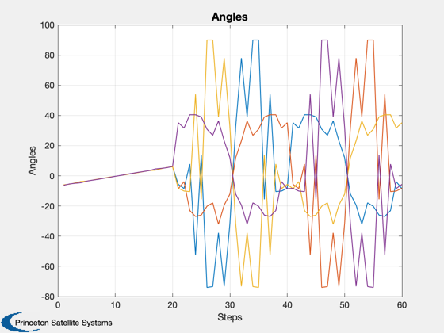
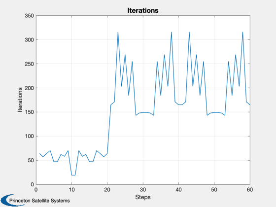

Demonstrate computing angles for a sail with four vanes.
This is an underdetermined problem solved using fminsearch.
Since version 9. ------------------------------------------------------------------------ See also SolveVaneAngles, SailDisturbance, Theta0, Cone, Constant, WaitBarManager, Plot2D, Unit, Date2JD, El2RV, SearchVaneAngles, ConeClockToU, QSail, DisturbanceStruct, EnvironmentStruct, ProfileStruct, SailEnvironment, SailPropsToAccel ------------------------------------------------------------------------
Contents
%-------------------------------------------------------------------------- % Copyright 2009 Princeton Satellite Systems, Inc. % All rights reserved. %--------------------------------------------------------------------------
Set up the problem
%-------------------- clear SailDisturbance; clear thetas; clear ks2;
Use a CAD model to get actual torque produced by vanes
%------------------------------------------------------- g = load('SailWithFourVanes');
Define spacecraft properties
%----------------------------- mass = g.mass.mass; % spacecraft mass in kg lSail = max(max(g.component(2).v)); % sail length along one side in m area = sum(g.component(2).a); acc0 = SailPropsToAccel( area, mass );
Vane area
%------------- areaVane = g.component(3).a; % m2
Maximum torque
%--------------- thetaMax = 80*pi/180; Ps = Constant('solar pressure mks'); fVane = 2*Ps*areaVane; Tmax = 4*lSail*fVane*sin(thetaMax);
Environment and disturbance models
%-----------------------------------
d = struct;
d = EnvironmentStruct( d );
d = DisturbanceStruct( d );
d.aeroOn = 0;
d.albedoOn = 0;
d.magOn = 0;
d.radOn = 0;
Profile: orbit, attitude
%------------------------- jD = Date2JD; [r,v] = El2RV([Constant('au') 0 0 0 0 0],[],Constant('mu sun')); uSun = -Unit(r); qS = QSail( uSun, r, v ); p = ProfileStruct; p.q = qS; p.r = r; p.v = v; p.jD = jD; % states for rotating vanes p.body = [2 3 4 5]; p.angle = [0; 0; 0; 0]; p.axis = [0 0 1; 0 0 1; 0 0 1; 0 0 1]'; % Environment will be constant over this short period env = SailEnvironment( 'sun', p, d );
Define a torque space for solving angles
%----------------------------------------- zz = zeros(1,20); oo = linspace(-1,1,20); Tcommand = Tmax/10*[oo zz zz; zz oo zz; zz zz oo]; % Investigate the effect of cone angle on the three-axis torque produced % (Vanes don't produce a pure roll torque for nonzero cone angle) %----------------------------------------------------------------------- cone = 0; clock = 0; torque = zeros(3,size(Tcommand,2)); [u,qItoCC] = ConeClockToU( cone, clock, qS ); p.q = qItoCC; WaitBarManager( 'initialize', struct('nSamp',size(Tcommand,2),'name','Vane Search') ); for k = 1:size(Tcommand,2) % Initialize for roll torque theta0 = asin(Tcommand(1,k)./(4*lSail*fVane)); [theta,iter] = SearchVaneAngles(Tcommand(:,k), theta0*ones(4,1), g, env, p, d); p.angle = theta; [f, tq] = SailDisturbance( g, p, env, d ); torque(:,k) = tq.total; thetas(:,k) = theta; ks2(k) = iter; WaitBarManager( 'update', k ); end WaitBarManager( 'close' ); Plot2D(1:size(Tcommand,2),Tcommand,'Steps',{'Tx','Ty','Tz'},'Torque Demand vs. Achieved') for j = 1:3 subplot(3,1,j) hold on plot(1:size(Tcommand,2),torque(j,:),'r'); end Plot2D(1:size(Tcommand,2),Tcommand-torque,'Steps','Torque Error') Plot2D(1:size(Tcommand,2),thetas*180/pi,'Steps','Angles') Plot2D(1:size(Tcommand,2),ks2,'Steps','Iterations')   
Define a torque space for solving angles
%----------------------------------------- % Tcommand = Tmax/10*randn(3,100); % assign overturning torque in pairs? %-------------------------------------- % PSS internal file version information %--------------------------------------